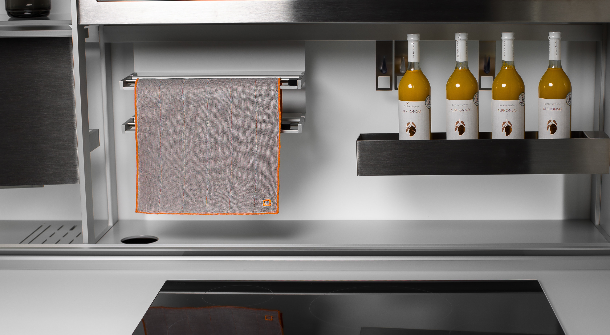
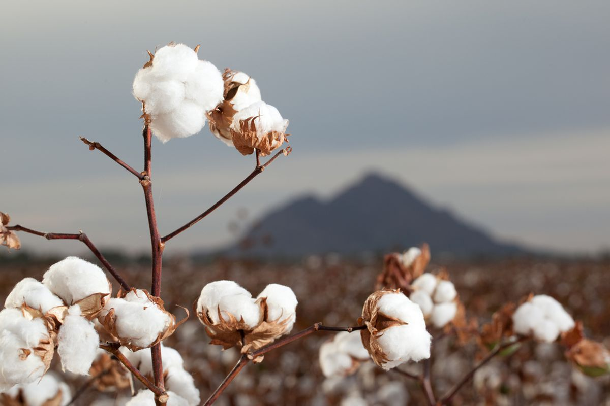
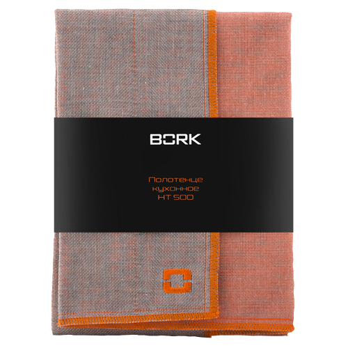
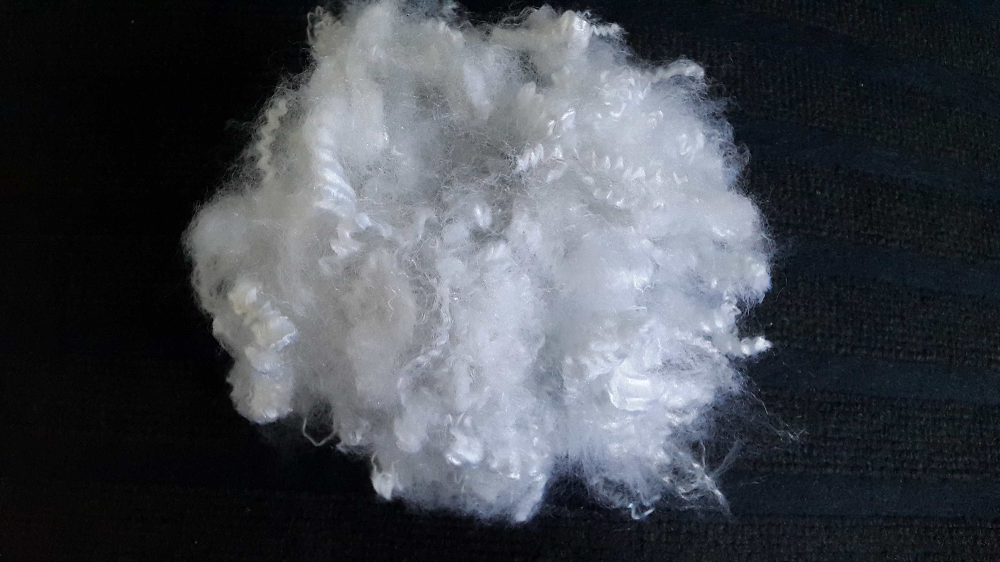

Полотенце кухонное BORK HT500
Инновационный текстиль, при производстве которого используются и новейшие технологии, и традиционные японские техники производства. Сочетание традиционности и инновации, рождает по истине уникальный продукт.
Отличительной особенностью данного текстиля является уникальное многослойные плетение, которое одновременно придаёт мягкость текстилю и в то же время, многократно увеличивает количество впитываемой воды. Также, за счёт многослойности, есть возможность сочетания нескольких видов пряжи, что позволяет придавать изделиям свойства, которые до этого невозможно было совместить в одном виде текстиля.
Фабрика Маруяма была основана в 1930 году, в самом сердце Японии, в префектуре Нара, недалеко от древней столицы Японии Киото. Впитав многовековую историю самой Японии и основываясь на традиционных техниках ткачества, фабрика производила москитные сетки для японских домов. В последствии, в связи с угасанием спроса, фабрика перешла на производство домашнего текстиля, используя традиционную технику и в то же время современные технологии и оборудование. На сегодняшний день, фабрика является одним из основных поставщиков традиционных японских отелей «рёкан» по всей Японии, символизируя традиционные ценности Японии.
Рёкан – гостиница в традиционном японском стиле.
Полотенце BORK HT500 размером 36 x 70 см. соткано в 4 слоя и идеально подходит для ухода за посудой, кухонными поверхностями и другими предметами. В состав ткани входит белый активированный уголь, известный своими антибактериальными и абсорбирующими свойствами.
Состав полотенца, органический хлопок из США 18% и вискоза 82%.
Вискоза – это искусственная ткань, но не синтетика. При производстве материала используется натуральное сырье – древесная целлюлоза.
Химик и инженер Хилэйр де Шардонне первым придумал, как превратить древесину в текстильные волокна. Так в ХІХ столетии на свет появилась вискоза. Изобретение было настолько удачным, что спустя не одну сотню лет эта ткань всё так же пользуется популярностью.
Преимущества материала:
- Ткань мягкая и приятная на ощупь, теплая зимой и прохладная летом
- Не накапливает статическое электричество
- Легче чем хлопок
- Впитывает влагу в два раза больше, чем хлопок
- Не вызывает аллергию
- Имеет высокие гигиенические свойства
Вискоза в сочетании с хлопком даёт более прочное волокно.
Внимание: в процессе производства, кухонные текстиль прошел процедуру накрахмаливания. Перед первым использованием, необходимо выстирать текстиль в тёплой воде.